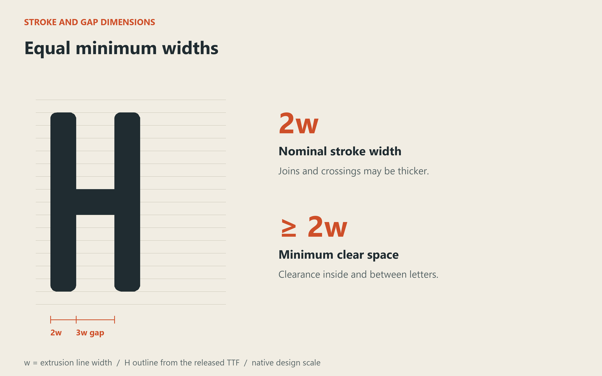
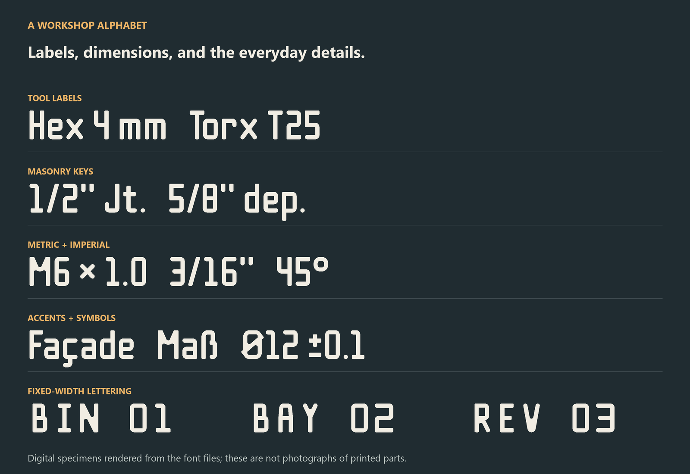
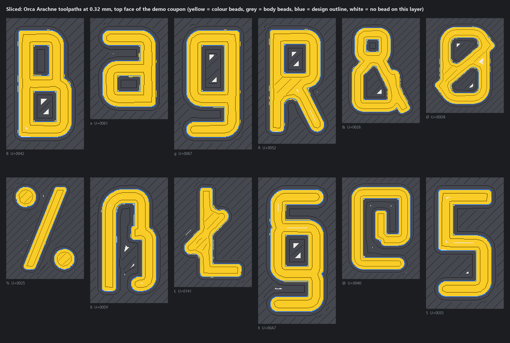

01 / PROPORTIONAL
Brewster Technical
The starting point for labels. Proportional widths and kerning.
Download TTF ↓FOR FDM 3D PRINTING
PERSONAL + COMMERCIAL USE / FREE1:1 minimum width for strokes and gaps. Both are designed around the same extrusion width, so they reach the minimum printable size together.
w = extrusion line width. Joins may be thicker. ¹ Proportional and Tab; Mono includes 362.
Proportional spacing and kerning for everyday labels.
A font can have even strokes and still be hard to print. The strokes fit. The small space inside an e does not. On a two-colour part, even the “empty” space is full of plastic.
Brewster Technical gives strokes and gaps the same minimum width: two extrusion lines. The aim is for the small features to reach the print limit together. Joins can be thicker and some gaps are wider. The minimum widths match; the areas of ink and background do not have to.

The first job was small, multicolour labels on masonry repointing keys. That grew into a family for tool labels, storage bins, dimensions, and printed parts.
Latin letters, accents, fractions, arrows, punctuation, and measurement symbols keep practical labels readable. The old working names were Double bead and Beadjoint.

Use the extrusion line width for the text, which may differ from the nozzle diameter. The calculator gives the font’s reference size.
At 0.42 mm line width, start with a 5.88 mm capital height.
The demo coupon was sliced at a 0.32 mm extrusion width. Yellow is the lettering, grey is the body, blue is the design outline, and white marks areas without a bead on that layer. This is a toolpath render. Check the preview for your own printer and settings.

01 / PROPORTIONAL
The starting point for labels. Proportional widths and kerning.
Download TTF ↓02 / TABULAR FIGURES
Proportional letters, equal-width digits. For measurements in columns.
Download TTF ↓03 / MONOSPACE
A fixed 12w cell. Narrow forms and 362 drawn characters.
Download TTF ↓Open a downloaded TTF in your system’s font installer, install it, and restart your CAD or design app if needed. Download all three with the license ↓
ASCII, Latin-1, Latin Extended-A, Romanian comma-below letters, additional Welsh accents, capital ẞ, fractions, currency signs, arrows, and selected mathematical symbols. This is a Latin-focused family, without complete Greek or Cyrillic alphabets.
Free for personal and commercial work. The SIL Open Font License permits modifications and embedding. Distributed fonts must retain the copyright notice and OFL; modified versions must use different names unless permission is granted. The font cannot be sold by itself.
Your documents, artwork, and printed products do not have to use the OFL or display a credit. If you build on the font, please acknowledge its origins and describe your changes.
Full license and Reserved Font Names · License explained · Source on GitHub ↗ · Asset record
{kind=link}
{kind=link}
{kind=link}